| 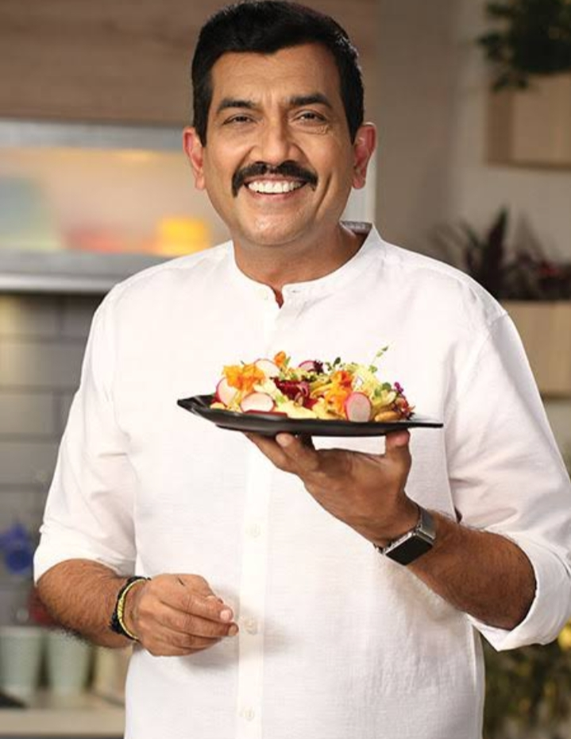 | 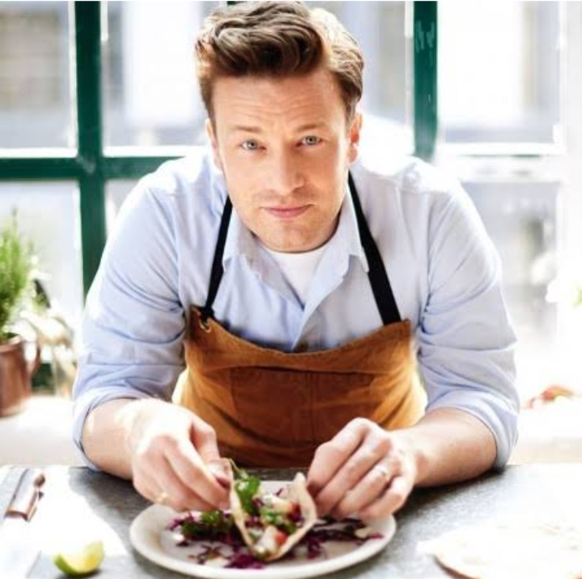 | 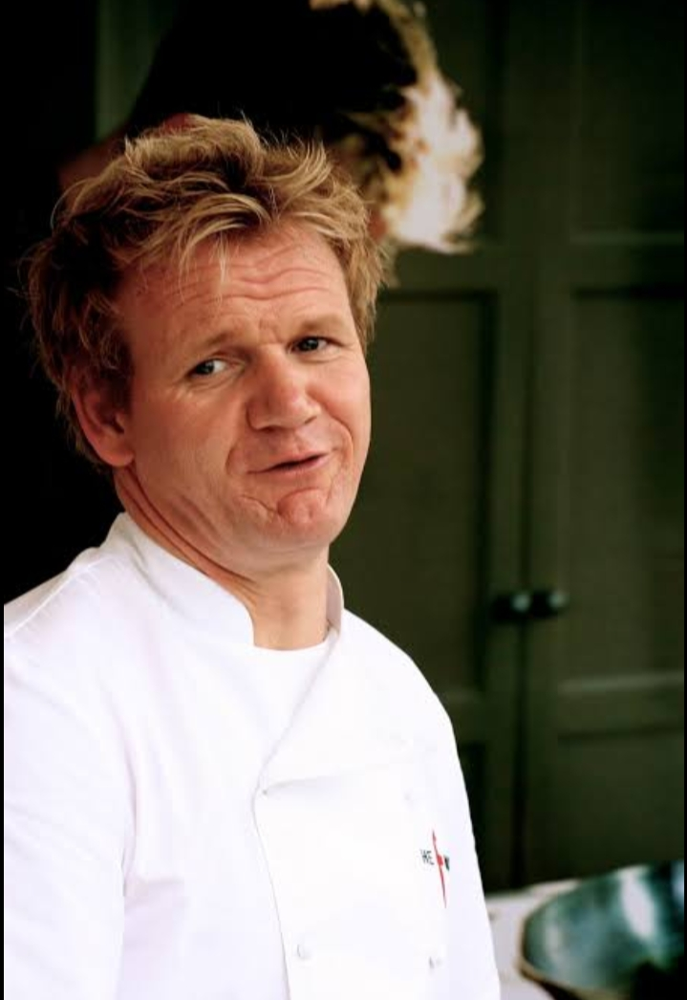 | 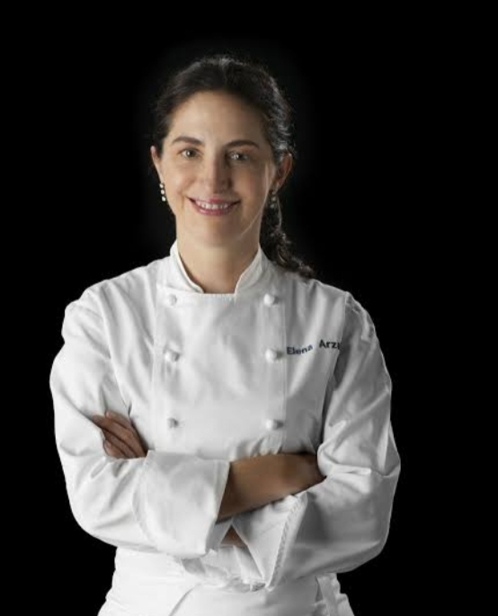 | 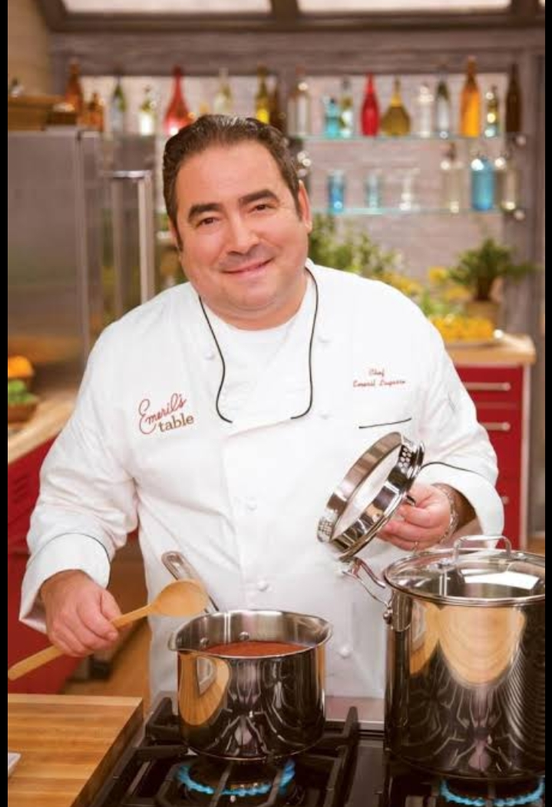 |
List of National chefs- Vikash khanna,Kunal kapur,Amninder sandhu,Hari nayak,Ranveer brar,Ritesh kumar
| 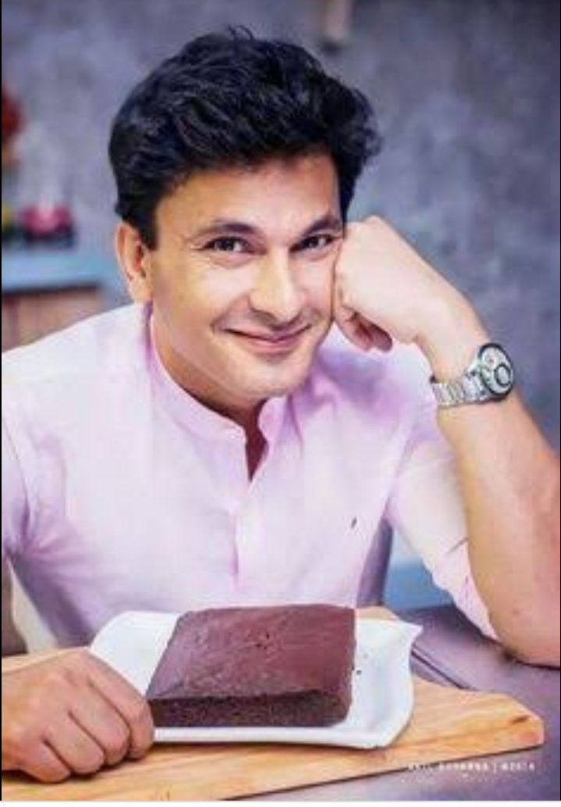 | 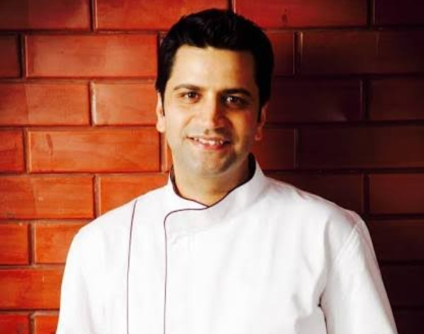 | 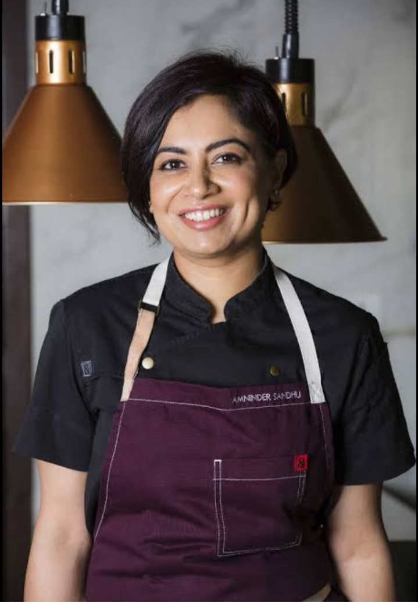 | 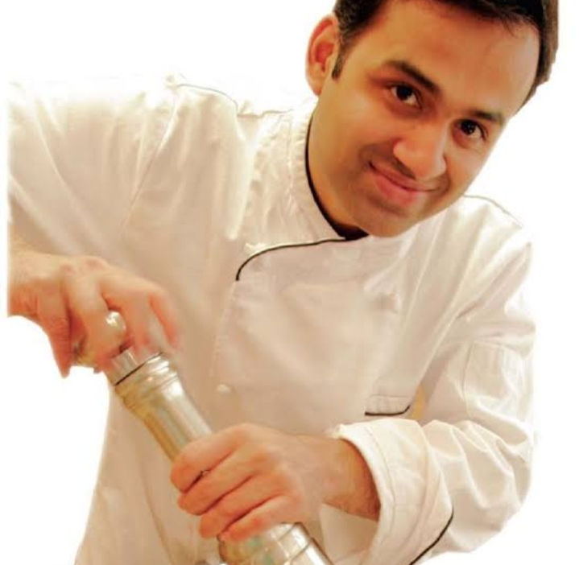 | 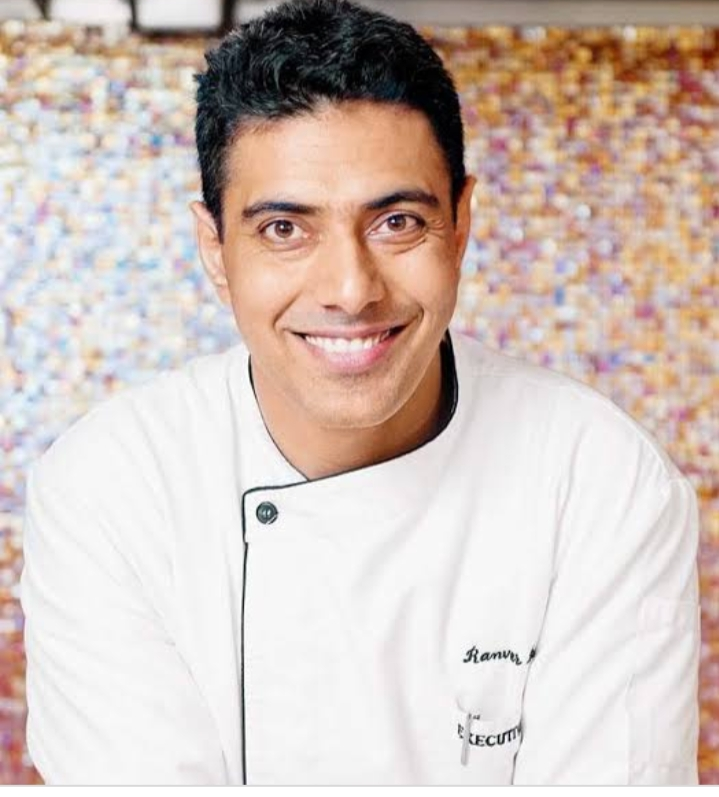 | |
MASTERCHEF(Food platform)
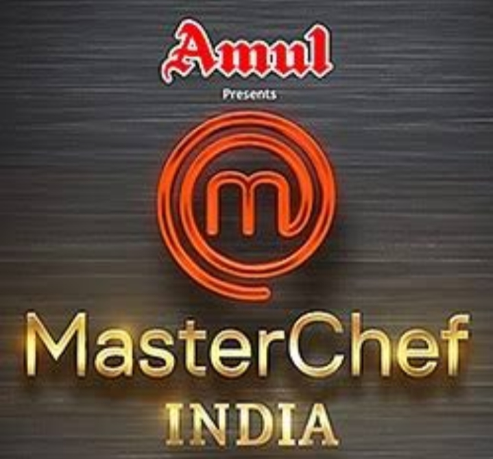Masterchef is food Platform who gives us the tag of chef which is the way of giving a tag of sucess famouschef.it is give you to show your towards food and become passion pasionate towards foody.